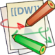

Documentation de LemonLDAP::NG
Documentation applicable pour LemonLDAP::NG >= 0.9 Merci de lire FAQ en premierInstallation
- Prérequis et dépendances (en)
- Installation depuis l'archive (en)
- Installation sous Debian/Ubuntu à partir des paquets (en)
- Installation sous RHEL/CentOS à partir des paquets (en)
- Utilisation de MySQL pour le stockage des sessions et/ou de la configuration (en)
- Installation l'exemple fourni
Configuration
Général
- Vision globale de la configuration (en)
- Liste des paramètres de configuration (en)
- Menu du portail (en)
- Personnalisation des canevas HTML pour le portail (en)
- Modèle RBAC (en)
LDAP
Fonctionnalités étendues
- Utilisation des Web Services (modules SOAP) (fr)
- Utilisation de Liberty Alliance pour la fédération d'identités (projet FederID) (fr)
- Système de notifications (en)
Protection des applications
Applications existantes
| Application | Description |
|---|---|
| Dokuwiki  |
Dokuwiki est un moteur de wiki en PHP Procédure SSO (en) Site web officiel |
| Gestion et de Réservations de
Ressources |
GRR permet de gérer la réservation de
ressources Procédure SSO (fr) Site web officiel |
| GLPI |
GLPI est outil de gestion de parc Procédure SSO (en) Site web officiel |
| phpLDAPadmin |
Interface web de gestion d'annuaire LDAP Procédure SSO (en) Site web officiel |
| Sympa |
Gestionnaire de listes de diffusion Procédure SSO (en) Site web officiel |
Connecteurs
| Application | Description |
|---|---|
| Tomcat |
Tomcat est un conteneur de servlets J2EE. Il utilise des valves
pour certaines fonctionnalités, comme l'intégration au
SSO. Procédure SSO (en) Site web officiel |
| HTTP Basic |
HTTP Basic Autentication est un mécanisme
d'authentification standard utilisé par de nombreux serveurs
Web (Apache, IIS, ...) SSO procedure (en) |
Applications "maison"
- Comment modifier mon application?